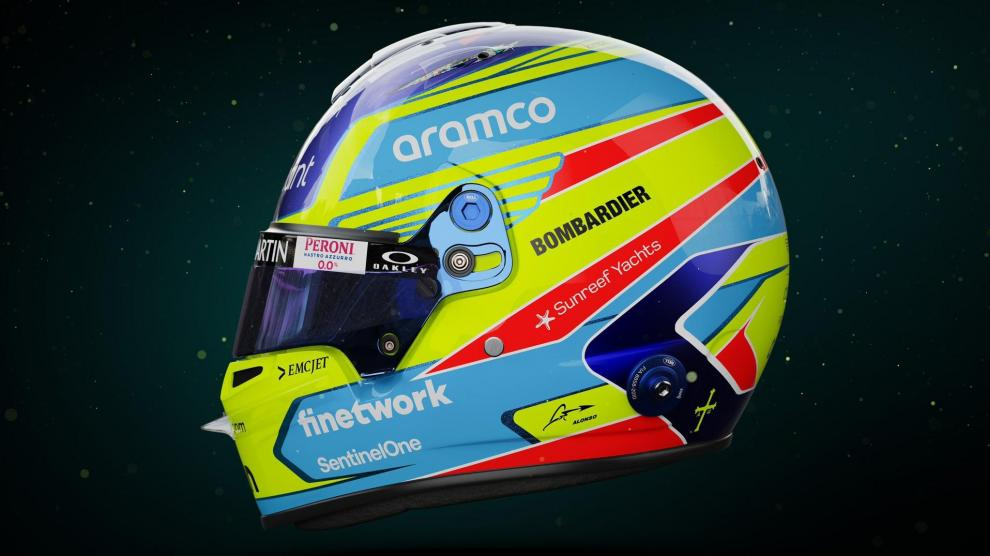
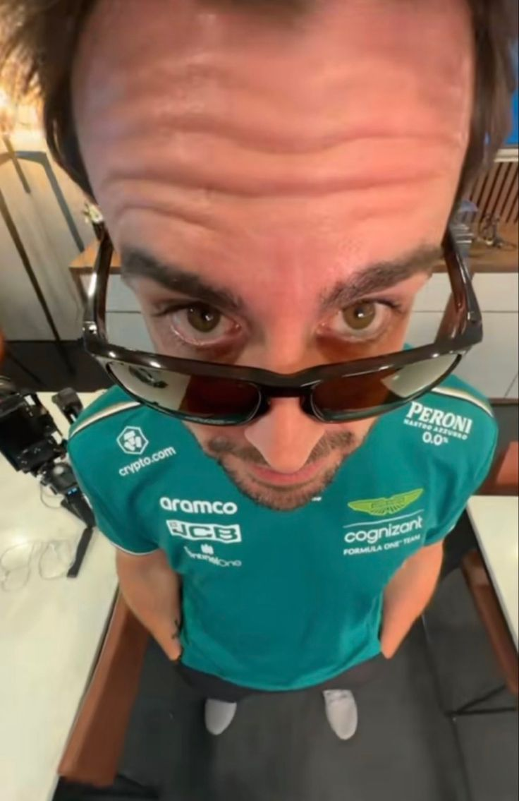
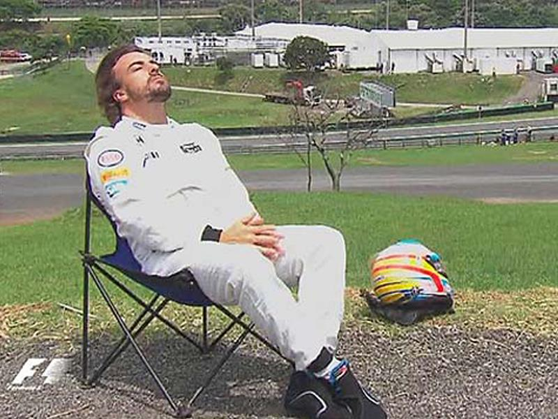

Fernando Alonso Díaz
- Team: Aston Martin
- Land: Spanien
- Geburtsort: Oviedo, Spanien
- Geburtsdatum: 29.07.1981
- Alter: 43
- Podien: 106
- Grands Prix gefahren: 401
- Weltmeisterschaften: 2
- Team: Aston Martin
- Fahrernummer: 14
Michael Schumacher war in den frühen 2000er Jahren der unangefochtene König der Formel 1 und holte Siege und Meisterschaften in einer Geschwindigkeit, die zu dieser Zeit einfach unerhört war. Es brauchte jemand ganz Besonderes, um die Ferrari-Legende vom Thron zu stürzen – und dass es Fernando Alonso war, der es geschafft hat, sagt alles, was man über den Spanier wissen muss. Alonso ist hart umkämpft und macht keinen Hehl daraus, was sein Talent angeht, und stuft sich selbst als 9/10 "in allem" ein, und nur wenige Kenner würden dem widersprechen, denn seine Leistungen in der Formel 1 zeichnen sich durch rasante Geschwindigkeit, brillantes taktisches Denken, vorbildliche Rennkunst, ein messerscharfes Auge für Details und einen unermüdlichen Siegeswillen aus. In seinen Anfängen war er ein Serienrekordbrecher und einst der jüngste Polesitter der Formel 1, Rennsieger, Weltmeister und zweifacher Weltmeister, als er mit dem Renault-Team Erfolge feierte. Selbst Alonso konnte diesen erstaunlichen Lauf in seiner späteren Karriere nicht fortsetzen und konnte seiner Sammlung trotz Stationen bei McLaren und Ferrari keinen weiteren Titel hinzufügen. Doch nach zwei Jahren Pause vom Formel-1-Sport – und mit zwei Le-Mans-Siegen in der Tasche – kehrte Alonso 2021 mit Alpine zurück. Sein Speed und seine Entschlossenheit waren unvermindert und er stand im selben Jahr wieder auf dem Podium, aber frustriert von der mangelnden Zuverlässigkeit – und dem Fehlen eines langfristigen Vertrags – entschied er sich in der folgenden Saison, das Schiff erneut zu verlassen. Und nach acht Podestplätzen in seiner ersten Saison mit Aston Martin hofft Alonso nun, dass er mit dem Team in Grün endlich auf die Siegerstraße zurückkehrt, denn er hat in der Formel 1 noch eine Rechnung offen...
 